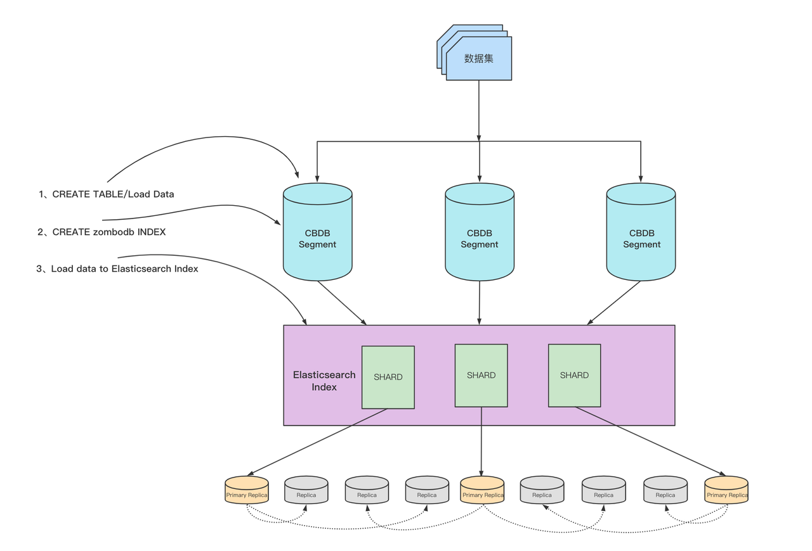

Using ZomboDB to integrate with Elasticsearch
ZomboDB is a plugin for SynxDB that enables SynxDB and Elasticsearch to work together, providing SynxDB with Elasticsearch’s rich full-text search and text analysis capabilities.
ZomboDB is essentially an external index for data tables. Users can create ZomboDB indexes on existing SynxDB tables using the standard SQL index creation syntax.
ZomboDB can manage indexes on Elasticsearch clusters and ensures transactional correctness for text search operations.
ZomboDB supports most SynxDB SQL syntax, including CREATE INDEX, COPY, INSERT, UPDATE, DELETE, SELECT, ALTER, DROP, REINDEX, (auto)VACUUM.
How it works
ZomboDB connects SynxDB clusters with Elasticsearch clusters, regardless of whether these two clusters are deployed on the same or different hosts, as long as network connectivity between the cluster hosts is maintained.
A ZomboDB index in a SynxDB data table actually corresponds to an index in Elasticsearch. With large data volumes, to avoid having each segment in SynxDB scan the full dataset under the index, data from different segments can be distributed to various shards under the index, ensuring efficient ES data scanning for each segment.
Create index and load data process
The following diagram shows the general process of creating a ZomboDB index for a data table and loading data.
The entire process involves communication and interaction with the Coordinator node in the SynxDB cluster.
Create a data table in the SynxDB cluster and load the corresponding data.
Use the
CREATE INDEXsyntax to create a ZomboDB index. At this time, ensure that the Elasticsearch cluster is available and the network is connected to the SynxDB cluster.During the creation process, ZomboDB will automatically insert existing data from the table into the corresponding index in Elasticsearch. If an error occurs or the transaction is manually rolled back, the data in ES will also be automatically cleaned up.
After the index is created, any new data inserted into the table will automatically be inserted into the corresponding Elasticsearch index.
Query data process
The following diagram shows the general process of querying data when a ZomboDB index exists.
The user uses ZomboDB query syntax to query based on the ZomboDB index. ZomboDB queries are essentially the same as regular select statements, except they need to use the ZomboDB-specific identifier
==>.The Coordinator node in the SynxDB cluster distributes the query to each Segment.
Each Segment executes the query independently, only needing to query data from a specific Shard in the corresponding Elasticsearch index.
Each Segment returns the query results to the Coordinator node.
The Coordinator node receives the results from the Segments, performs aggregation or other operations, and returns them to the user.
Installation
There are two ways to install ZomboDB: using gppkg packages or using RPM packages.
Attention
- Both gppkg and RPM packages provide HTTPS and HTTP versions:
gppkg package (HTTPS version)
gppkg package (HTTP version)
RPM package (HTTPS version)
RPM package (HTTP version)
If the Elasticsearch cluster used by ZomboDB is configured with HTTPS, you should choose the HTTPS version of the installation package when installing ZomboDB.
When installing ZomboDB, if you need to use custom certificates, you need to declare the environment variable
SSL_CERT_FILE, for exampleexport SSL_CERT_FILE=/path/to/your/cert, otherwise the system default certificate will be used.
Install using gppkg package
Execute the following command and modify the gppkg package to your own gppkg package name to complete the installation.
# zombodb-1.1-24716-release.gppkg is the gppkg package gppkg -i zombodb-1.1-24716-release.gppkg
Execute the following command for verification.
-- Enter the database through psql postgres and create the ZomboDB extension postgres=# create extension zombodb; -- The following result indicates successful installation CREATE EXTENSION
Install using RPM package
Execute the following command to install ZomboDB.
# installroot is the |product_name| installation directory # zombodb_centos_pg14-3000.1.5_1.x86_64-24716-release.rpm is the provided ZomboDB rpm package yum install zombodb_centos_pg14-3000.1.5_1.x86_64-24716-release.rpm --installroot=/usr/local/cloudberry-db-devel/
Execute the following command for verification.
-- Enter the database through psql postgres and create the ZomboDB extension postgres=# create extension zombodb; -- The following result indicates successful installation CREATE EXTENSION
Usage instructions
Create and use indexes
Create indexes
The CREATE INDEX syntax can create indexes for all or partial fields.
Create indexes for all fields
The syntax for creating a ZomboDB index is as follows.
CREATE INDEX index_name
ON table_name
USING zombodb ((table_name.*))
WITH (...);
((table_name.*)) indicates indexing all fields in the table, meaning all fields in the table are stored in ES, allowing content from any field in the table to be searched.
ZomboDB generates a UUID as the index name for Elasticsearch, and for readability, it also assigns an alias to the index name. The alias naming convention is database_name.scheme_name.table_name.index_name-index_OID, which can be queried through the zdb.index_stats table that stores statistical information related to ZomboDB indexes.
demo=# select * from zdb.index_stats where pg_index_name = 'idxproducts'::regclass;
alias | es_index_name | url | table_name | pg_index_name | es_docs | es_size | es_size_bytes | pg_docs_estimate | pg_size | pg_size_bytes | shards | replicas | doc_count | aborted_xids
----------------------------------------+------------------------+------------------------+------------+---------------+---------+---------+---------------+------------------+---------+---------------+--------+----------+-----------+--------------
demo.public.products.idxproducts-17840 | 17096.2200.17098.17840 | http://localhost:9200/ | products | idxproducts | 5 | 20 kB | 20264 | 0 | 512 kB | 524288 | 5 | 0 | 5 | 0
(1 row)
Create indexes for partial fields
Still using the products table mentioned in the create index section as an example to show how to add indexes for partial fields. The products table is defined as follows.
CREATE TABLE products (
id SERIAL8 NOT NULL PRIMARY KEY,
name text NOT NULL,
keywords varchar(64)[],
short_summary text,
long_description text,
price bigint,
inventory_count integer,
discontinued boolean default false,
availability_date date
) DISTRIBUTED BY (id);
If you want to add indexes for partial fields of a table, you can create a custom function and use ROW() to combine and return a custom type that can include the fields you want to index.
Note that the custom function can only have one parameter, and the parameter type must be the table type that needs to be indexed.
The following example uses the products table to show how to index partial fields.
Create a custom type.
-- Here we create a custom type with three fields, representing the final field information stored in ES CREATE TYPE products_idx_type AS ( id bigint, name varchar, description text );
Create a custom function.
CREATE FUNCTION products_idx_func(products) RETURNS products_idx_type IMMUTABLE STRICT LANGUAGE sql AS $$ SELECT ROW ( $1.id, $1.name, COALESCE($1.short_summary, '') || ' ' || COALESCE($1.long_description, '') )::products_idx_type; $$;The parameter of this function is the products table, and the function behavior is simple: it maps fields from the products table to the custom type
products_idx_typethrough ROW.Here we combine two fields from the products table,
short_summaryandlong_description, into the description field in the custom type. You can combine any fields you want to index using this method.Create the index.
CREATE INDEX idxproducts ON products USING zombodb ((products_idx_func(products.*))) with (url='http://localhost:9200/');
Note the difference from indexing all fields here - we used a custom function for creation.
Perform queries.
demo=# select * from products where products_idx_func(products) ==> 'box'; id | name | keywords | short_summary | long_description | price | inventory_count | discontinued | availability_date ----+------+--------------------------------------+--------------------------------+-------------------------------------------------------------------------------------+-------+-----------------+--------------+------------------- 4 | Box | {wooden,box,"negative space",square} | Just an empty box made of wood | A wooden container that will eventually rot away. Put stuff it in (but not a cat). | 17000 | 0 | t | 2015-07-01 (1 row)
Modify indexes
ZomboDB indexes support the native ALTER INDEX syntax to modify their properties, such as setting index configuration items to new values or resetting them to default values. Example:
alter index idxproducts set (batch_size=50000);
Drop indexes
When deleting any object containing ZomboDB indexes, such as explicitly dropping an index, dropping a table, schema, or database, the corresponding index in Elasticsearch will also be deleted.
Note that if you drop a database (DROP Database), the corresponding ES index will not be deleted, because we currently have no way to get database deletion notifications in ZomboDB.
The DROP syntax is transaction-safe, meaning the corresponding Elasticsearch index will be deleted when the transaction is committed.
Syntax options
All the options mentioned below can be specified when creating an index, and can also be modified or reset through the ALTER INDEX syntax.
Required options
urlThe url represents the address of the Elasticsearch cluster. This option must be specified, but if
zdb.default_elasticsearch_urlis specified in the configuration filepostgresql.conf, this specified value will be used, and the url can be omitted when creating the index.Type: string Default: zdb.default_elasticsearch_url
Elasticsearch options
shardsThe number of shards for the index in Elasticsearch. The default is 5 shards per index. This option can be modified through
ALTER INDEX, butREINDEXmust be executed for it to take effect.Type: integer Default: 5 Range: [1, 32768]
replicasSpecifies the number of replicas for each shard of the Elasticsearch index. The default value is the system GUC value
zdb.default_replicas. It can be modified throughALTER INDEXand takes effect immediately.Type: integer Default: zdb.default_replicas
aliasThe alias of the index, which allows naming ZomboDB indexes in a more convenient and readable way. It can be modified through
ALTER INDEXand takes effect immediately.Regular SELECT statements use the actual index name, while aggregate functions such as
zdb.countandzdb.termsuse the index alias.Type: string Default: "database.schema.table.index-index_oid"
refresh_intervalThis option specifies how often the Elasticsearch index refreshes changes to ensure they can be searched. The default value is
-1because ZomboDB wants to control when to refresh to ensure MVCC correctness.Generally, it is not recommended to modify this configuration unless you can accept that SynxDB search results might temporarily not meet expectations. It can be modified through
ALTER INDEXand takes effect immediately.Type: string Default: "-1"
type_nameSpecifies the type name for inserting data into the Elasticsearch index. By default, this type is
_docin Elasticsearch 5x and 6x. In Elasticsearch 7x and later, this option is deprecated and can only be specified as_doc, so there is no need to modify this value in such cases.Note that this option can only be specified when creating the index and cannot be modified through
ALTER INDEX.Type: string Default: "_doc"
translog_durabilityWhether to persist and commit the Elasticsearch index’s translog after each Index, delete, update, or bulk request. This option accepts the following two valid values:
request: After each request, persist and commit the translog. In case of hardware failure, committed changes will not be lost.
async: Each persistence and commit of the translog is scheduled by the default interval. If hardware failure occurs, some data might be lost.
After Elasticsearch 7.4, this option was deprecated and might be removed in future versions. See Elasticsearch official documentation.
Type: string Default: "request" Valid values: "request", "async"
max_result_windowThe maximum amount of data that ZomboDB can accept from Elasticsearch in each scroll request. See Elasticsearch official documentation.
Tyoe: integer Default: 10000 Range: [1, INT_32_MAX]
total_fields_limitThe maximum number of fields for an index in Elasticsearch. See Elasticsearch official documentation.
Type: integer Default: 1000 Range: [1, INT_32_MAX]
max_terms_countThe maximum number of Term conditions that can be used in Elasticsearch Term queries. Increasing this option might improve the performance of cross-index joins. See Elasticsearch official documentation.
Type: integer Default: 65535 Range: [1, INT_32_MAX]
max_analyze_token_countThe maximum number of tokens that the
_analyzeAPI generates for a single request. This option is typically used when enabling custom highlighting for very large documents. See Elasticsearch official documentation.Type: integer Default: 10000 Range: [1, INT_32_MAX]
Network options
bulk_concurrencyWhen writing data to Elasticsearch, ZomboDB sends multiple HTTP requests. This configuration can control the concurrent volume of requests sent, and can be used to ensure that the concurrency level does not overwhelm the Elasticsearch cluster. It can be modified through
ALTER INDEXand takes effect immediately.Type: integer Default: Number of CPU cores Range: [1, Number of CPU cores]
batch_sizeWhen writing data to Elasticsearch, ZomboDB batches multiple requests into a single HTTP request to ES. The default value is 8 MB.
Type: integer (in bytes) Default: 8388608 Range: [1024, (INT_MAX/2)-1]
compression_levelSets the compression level for HTTP request packets. The worse the network environment, the higher this value can be set. Setting it to 0 disables all compression.
Type: integer Default: 1 Range: [0, 9]
Nested type mapping options
nested_fields_limitThe maximum number of different nested mappings in an index. See Elasticsearch official documentation.
Type: integer Default: 1000 Range: [1, INT_32_MAX]
nested_objects_limitThe maximum number of nested JSON objects in a document that contains all nested types. When a document contains too many nested types, this option can prevent out-of-memory errors. See Elasticsearch official documentation.
Type: integer Default: 10000 Range: [1, INT_32_MAX]
nested_object_date_detectionIf this option is enabled (disabled by default), nested objects with json or jsonb types will check whether new string-type fields match the specified dynamic date format. See Elasticsearch official documentation.
Type: bool Default: false
nested_object_numeric_detectionSimilar to the
nested_object_date_detectionoption, but for numeric types such as float or integer. See Elasticsearch official documentation.Type: bool Default: true
nested_object_text_mappingBy default, ZomboDB uses the above mapping types to map string-type properties if they exist in nested objects.
Can only be changed when creating the index.
Type: String (as JSON) Default: { "type": "keyword", "ignore_above": 10922, "normalizer": "lowercase", "copy_to": "zdb_all" }
Advanced options
include_sourceThis configuration controls whether the source field of each document should be included in Elasticsearch’s
_sourcefield. Disabling this option can reduce the size of ES documents, but it is not recommended in production environments.Type: bool Default: true
Usage examples
The following is a complete example showing how to create and use ZomboDB indexes.
Enter the SynxDB cluster environment and create a demo sample database.
createdb demoOpen the psql client and connect to the demo database.
psql demoCreate the sample data table products.
CREATE TABLE products ( id SERIAL8 NOT NULL PRIMARY KEY, name text NOT NULL, keywords varchar(64)[], short_summary text, long_description text, price bigint, inventory_count integer, discontinued boolean default false, availability_date date ) DISTRIBUTED BY (id);
Insert several rows of data into the products table.
COPY products FROM PROGRAM 'curl https://raw.githubusercontent.com/zombodb/zombodb/master/TUTORIAL-data.dmp';
Check if the ZomboDB plugin exists, and create the ZomboDB plugin if it doesn’t exist.
SELECT * FROM pg_extension WHERE extname = 'zombodb'; -- Create the plugin if it doesn't exist CREATE extension zombodb;
Create a ZomboDB index. Make sure you have an available Elasticsearch cluster and that the network is connected to the SynxDB cluster.
CREATE INDEX idxproducts ON products USING zombodb ((products.*)) WITH (url='http://<Elasticsearch cluster IP address>:9200/');
Here
products.*means creating an index for all fields of the products table, which means every field of the products table will be stored in Elasticsearch. You can also index specific fields, see the manage indexes section for specific usage. The url is the address and port of the Elasticsearch cluster.Attention
If the compiled ZomboDB is the HTTPS version, then the url address here needs to be filled with
https.If there is username and password authentication, you need to add the username and password to the url, for example:
http://username:password@<Elasticsearch cluster IP address>:9200/.
View the products table structure information to check if the ZomboDB index was created successfully.
demo=# \d products Table "public.products" Column | Type | Collation | Nullable | Default -------------------+-------------------------+-----------+----------+-------------------------------------- id | bigint | | not null | nextval('products_id_seq'::regclass) name | text | | not null | keywords | character varying(64)[] | | | short_summary | text | | | long_description | text | | | price | bigint | | | inventory_count | integer | | | discontinued | boolean | | | false availability_date | date | | | Indexes: "products_pkey" PRIMARY KEY, btree (id) "idxproducts" zombodb ((products.*)) WITH (url='http://localhost:9200/') Distributed by: (id)Start executing ZomboDB queries using the ZomboDB query operator
==>. The following is an example of a simple fuzzy query.demo=# select * from products where products ==> 'sports,box'; id | name | keywords | short_summary | long_description | price | inventory_count | discontinued | availability_date ----+----------+--------------------------------------+--------------------------------+-------------------------------------------------------------------------------------+-------+-----------------+--------------+------------------- 2 | Baseball | {baseball,sports,round} | It's a baseball | Throw it at a person with a big wooden stick and hope they don't hit it | 1249 | 2 | f | 2015-08-21 4 | Box | {wooden,box,"negative space",square} | Just an empty box made of wood | A wooden container that will eventually rot away. Put stuff it in (but not a cat). | 17000 | 0 | t | 2015-07-01 (2 rows)
Execute the following command to view the execution plan of this SQL. You can see that the ZomboDB index is used for the query.
demo=# explain select * from products where products ==> 'sports,box'; QUERY PLAN ------------------------------------------------------------------------------------ Gather Motion 3:1 (slice1; segments: 3) (cost=0.00..0.03 rows=1 width=153) -> Index Scan using idxproducts on products (cost=0.00..0.01 rows=1 width=153) Index Cond: (ctid ==> '{"query_string":{"query":"sports,box"}}'::zdbquery) Optimizer: Postgres query optimizer
ZomboDB query syntax
ZomboDB Query Language (ZQL) is a simple text query syntax provided by ZomboDB. ZQL provides the following query syntax:
Boolean operators (WITH, AND, OR, NOT)
Words
Phrases
Specified fields
Proximity words or phrases
Wildcards
Direct Elasticsearch JSON queries
Boolean queries
Example 1: Query documents where any field contains wine or bear, and contains cheese.
select * from products where products ==> 'wine or bear and cheese';
Example 2: Query all documents that contain bear and cheese, and do not contain food, plus documents containing wine.
select * from products where products ==> 'wine or beer and cheese not food';
Boolean conditions can also be replaced with corresponding operators.
WITH:
%AND:
&OR:
,NOT:
!
So the above examples can be rewritten as follows.
wine & bear,cheese
wine, bear & cheese !food
Field-specific queries
Example: Directly specify a field for querying in SQL.
ubuntu=# select * from products where products ==> 'price:17000';
id | name | keywords | short_summary | long_description | price |
inventory_count | discontinued | availability_date
----+------+--------------------------------------+--------------------------------+-------------------------------------------------------------------------------------+-------+
-----------------+--------------+-------------------
4 | Box | {wooden,box,"negative space",square} | Just an empty box made of wood | A wooden container that will eventually rot away. Put stuff it in (but not a cat). | 17000 |
0 | t | 2015-07-01
(1 row)
Value list queries
ZomboDB supports Value List queries. In SQL, specify an array of values for the field to be queried, represented by []. Example:
select * from products where products ==> 'price=[17000,1249]';
Proximity search
Proximity search allows specifying that terms (or phrases) should be within a certain number of tokens. The operators are W/n and WO/n, where n represents the distance. W/n means any order, WO/n means in order. For example: the sentence The quick brown fox jumped over the lazy dog's back, the proximity search phrase jumped w/2 quick can match the above sentence. The reason:
The distance between jumped and quick does not exceed 2.
There is no order restriction.
If the proximity search phrase is jumped wo/2 quick, it cannot match the above sentence because the order is reversed.
Example:
ubuntu=# select * from products where products ==> 'will w/2 wooden';
id | name | keywords | short_summary | long_description | price |
inventory_count | discontinued | availability_date
----+------+--------------------------------------+--------------------------------+-------------------------------------------------------------------------------------+-------+
-----------------+--------------+-------------------
4 | Box | {wooden,box,"negative space",square} | Just an empty box made of wood | A wooden container that will eventually rot away. Put stuff it in (but not a cat). | 17000 |
0 | t | 2015-07-01
(1 row)
Elasticsearch JSON queries
ZomboDB allows using JSON queries that are directly compatible with Elasticsearch. In fact, this feature operates as a single operator in ZomboDB’s query language, so you can mix and match Elasticsearch JSON queries with ZomboDB’s query structure.
To use direct JSON queries, simply wrap Elasticsearch-compatible JSON in ({}).
Example:
ubuntu=# select * from products where products ==> 'square or ({"term": {"price": 1899}})';
id | name | keywords | short_summary | long_descript
ion | price | inventory_count | discontinued | availability_date
----+-----------+---------------------------------------------------+-------------------------------------------------+-----------------------------------------------------------
-------------------------------------------------+-------+-----------------+--------------+-------------------
3 | Telephone | {communication,primitive,"alexander graham bell"} | A device to enable long-distance communications | Use this to call your friends and family and be annoyed by
telemarketers. Long-distance charges might apply | 1899 | 200 | f | 2015-08-11
4 | Box | {wooden,box,"negative space",square} | Just an empty box made of wood | A wooden container that will eventually rot away. Put stu
ff it in (but not a cat). | 17000 | 0 | t | 2015-07-01
(2 rows)
Query DSL
ZomboDB supports different ways to generate query statements that are compatible with Elasticsearch. You can generate JSON-formatted Elasticsearch Query DSL directly through ZomboDB’s ZQL query statements, or use ZomboDB’s SQL Builder API that is similar to Elasticsearch Query DSL.
Regardless of which ZomboDB method you use for querying, such as typical SELECT statements or aggregate functions, you can switch to the following query methods. Taking SELECT statements as an example, assuming our SQL is to query all data containing cats and dogs, the basic query template is as follows.
SELECT * FROM table WHERE table ==> 'cats and dogs query here'
Note: Regardless of which query method is used, this query is actually generating Elasticsearch Query DSL in JSON format.
ZomboDB uses a custom type called zdbquery for abstraction, which can be converted to text, json, and jsonb formats. Therefore, the type on the right side of ZomboDB’s query identifier ==> is zdbquery.
This section does not describe the functional details of Elasticsearch queries. If you feel the information here is insufficient, you can refer to Elasticsearch-related documentation, and there will be corresponding Elasticsearch documentation links in appropriate places. In other words, this section discusses how to use ZomboDB-supported methods to generate queries.
ZomboDB query statements
ZQL is ZomboDB’s unique text-based query language that can specify query formats with complex conditions, for example:
select * from products where products ==> 'box wooden';
select * from products where products ==> 'box AND wooden';
To show the corresponding Elasticsearch JSON-formatted QueryDSL represented by this query condition, you can use the zdb.dump_query function for querying and display, as shown below.
demo=# select zdb.dump_query('idxproducts', 'box and wooden');
dump_query
---------------------------------------
{
"bool": {
"must": [
{
"bool": {
"should": [
{
"match": {
"zdb_all": {
"query": "box",
"boost": 1.0
}
}
},
{
"match": {
"long_description": {
"query": "box",
"boost": 1.0
}
}
}
]
}
},
{
"bool": {
"should": [
{
"match": {
"zdb_all": {
"query": "wooden",
"boost": 1.0
}
}
},
{
"match": {
"long_description": {
"query": "wooden",
"boost": 1.0
}
}
}
]
}
}
]
}
}
Direct JSON
ZQL is a more readable way, and you can also directly specify JSON query conditions in Elasticsearch, as shown below.
demo=# select * from products where products ==> '{ "bool": { "should": [ { "bool": { "should": [ { "match": { "zdb_all": { "query": "box", "boost": 1.0 } } }, { "match": { "long_description": { "query": "box", "boost": 1.0 } } } ] } }, { "bool": { "should": [ { "match": { "zdb_all": { "query": "wooden", "boost": 1.0 } } }, { "match": { "long_description": { "query": "wooden", "boost": 1.0 } } } ] } } ] } }';
id | name | keywords | short_summary | long_description | pri
ce | inventory_count | discontinued | availability_date
----+----------+--------------------------------------+--------------------------------+-------------------------------------------------------------------------------------+----
---+-----------------+--------------+-------------------
2 | Baseball | {baseball,sports,round} | It's a baseball | Throw it at a person with a big wooden stick and hope they don't hit it | 12
49 | 2 | f | 2015-08-21
4 | Box | {wooden,box,"negative space",square} | Just an empty box made of wood | A wooden container that will eventually rot away. Put stuff it in (but not a cat). | 170
00 | 0 | t | 2015-07-01
(2 rows)
SQL Builder API
ZomboDB supports Elasticsearch Query DSL queries in function form, and all functions are in a schema named dsl. These functions all return the zdbquery type and can be combined with each other to form complex query conditions.
The main advantage of this DSL query method is that these methods will perform syntax and type checking during SynxDB’s syntax checking phase. Errors will be reported promptly, and you can modify your queries promptly based on error messages.
Generally, each function is associated with an Elasticsearch query type, and the default values of these functions are actually the default values of the corresponding queries in Elasticsearch.
All queries are through simple function forms. For example, the following query is equivalent to a query containing two keywords box and wooden.
select * from products where products ==> dsl.and('box', 'wooden');
select * from products where products ==> dsl.and(dsl.term('zdb_all', 'box'), dsl.term('zdb_all', 'wooden'));
For DSL functions, you can add ::json after them to query their corresponding JSON format.
demo=# select dsl.and('box', 'wooden')::json;
and
------------------------------------------------------------------------------------------
{"bool":{"must":[{"query_string":{"query":"box"}},{"query_string":{"query":"wooden"}}]}}
(1 row)
demo=# select dsl.and(dsl.term('zdb_all', 'box'), dsl.term('zdb_all', 'wooden'))::json;
and
--------------------------------------------------------------------------------------------------
{"bool":{"must":[{"term":{"zdb_all":{"value":"box"}}},{"term":{"zdb_all":{"value":"wooden"}}}]}}
(1 row)
Simple boolean functions
dsl.andGenerates bool conditions contained in Elasticsearch’s
mustclause.FUNCTION dsl.and( VARIADIC queries zdbquery[] ) RETURNS zdbquery
dsl.or()Generates bool conditions contained in Elasticsearch’s
shouldclause.FUNCTION dsl.or( VARIADIC queries zdbquery[] ) RETURNS zdbquery
dsl.not()Generates bool conditions contained in Elasticsearch’s
must_notclause.FUNCTION dsl.not( VARIADIC queries zdbquery[] ) RETURNS zdbquery
-
This function represents the
boolquery in Elasticsearch, which can contain multiple bool-type query conditions and can be combined withdsl.must(),dsl.must_not(),dsl.should(), anddsl.filter()to form complex queries.FUNCTION dsl.bool( VARIADIC queries dsl.esqdsl_bool_part ) RETURNS zdbquery
Query example:
demo=# select * from products where products ==> dsl.bool(dsl.must('person'), dsl.should('box')); id | name | keywords | short_summary | long_description | price | inventory_count | discontinued | av ailability_date ----+----------+-------------------------+-----------------+-------------------------------------------------------------------------+-------+-----------------+--------------+--- ---------------- 2 | Baseball | {baseball,sports,round} | It's a baseball | Throw it at a person with a big wooden stick and hope they don't hit it | 1249 | 2 | f | 20 15-08-21 (1 row) -
This function represents the must clause of the
boolquery in Elasticsearch QueryDSL. It can be used as a must condition in thedsl.boolfunction and can appear multiple times.FUNCTION dsl.must( VARIADIC queries zdbquery[] )RETURNS dsl.esqdsl_must
-
This function represents the must_not clause of the
boolquery in Elasticsearch QueryDSL.FUNCTION dsl.must_not ( VARIADIC queries zdbquery[] )RETURNS dsl.esqdsl_must_not
-
This function represents the should clause of the
boolquery in Elasticsearch QueryDSL.FUNCTION dsl.should ( VARIADIC queries zdbquery[] )RETURNS dsl.esqdsl_should
-
This function represents the filter clause of the
boolquery in Elasticsearch QueryDSL. This function is designed to be used with the filter parameter ofdsl.bool(). Its parameters can be one or more of the dsl functions that return zdbquery type in ZomboDB.FUNCTION dsl.filter ( VARIADIC queries zdbquery[] )RETURNS dsl.esqdsl_filter
ES Query DSL
-
Returns documents that match the positive query while reducing the relevance score of documents that match the negative query. This method represents the
Boosting queryin Elasticsearch.FUNCTION dsl.boosting ( positive zdbquery, negative zdbquery, negative_boost real DEFAULT NULL) RETURNS zdbquery
-
No longer supported after Elasticsearch 7.3.0, this method represents the Query DSL common Query in Elasticsearch.
FUNCTION dsl.common ( field text, query text, boost real DEFAULT NULL, cutoff_frequency real DEFAULT NULL, analyzer text DEFAULT NULL, minimum_should_match integer DEFAULT NULL) RETURNS zdbquery
-
A query that wraps another zdbquery condition and returns a constant score equal to the query boost value for each document in the filter.
FUNCTION dsl.constant_score ( boost real, query zdbquery) RETURNS zdbquery
-
Matches a range of a field in documents. This function is mainly for matching timestamp-type data. This form is used for timestamp values.
ZomboDB will automatically convert the specified time to UTC (compatible with Elasticsearch), however, if the timezone represented by the timestamp is not specified, SynxDB will first assume it belongs to whatever timezone the server is running in (via TimeZone GUC).
FUNCTION dsl.datetime_range ( field text, lt timestamp with time zone DEFAULT NULL, gt timestamp with time zone DEFAULT NULL, lte timestamp with time zone DEFAULT NULL, gte timestamp with time zone DEFAULT NULL, boost real DEFAULT NULL) RETURNS zdbquery
-
Returns results matched by one or more wrapped query conditions.
FUNCTION dsl.dis_max ( queries zdbquery[], boost real DEFAULT NULL, tie_breaker real DEFAULT NULL) RETURNS zdbquery
-
Returns results where the specified field data is not empty.
FUNCTION dsl.field_exists ( field text) RETURNS zdbquery
dsl.field_missing()Method behavior is opposite to
dsl.field_exists, returning documents where the specified field data is empty.FUNCTION dsl.field_missing ( field text) RETURNS zdbquery
-
Fuzzy query in Elasticsearch, based on the Levenshtein edit distance algorithm.
FUNCTION dsl.fuzzy ( field text, value text, boost real DEFAULT NULL, fuzziness integer DEFAULT NULL, prefix_length integer DEFAULT NULL, max_expansions integer DEFAULT NULL, transpositions boolean DEFAULT NULL) RETURNS zdbquery
-
matchquery that can accept text, numerics, and dates types, analyzes these conditions, and returns matching results. zerotermsquery is an enumeration value that can takenoneandall.FUNCTION dsl.match ( field text, query text, boost real DEFAULT NULL, analyzer text DEFAULT NULL, minimum_should_match integer DEFAULT NULL, lenient boolean DEFAULT NULL, fuzziness integer DEFAULT NULL, fuzzy_rewrite text DEFAULT NULL, fuzzy_transpositions boolean DEFAULT NULL, prefix_length integer DEFAULT NULL, cutoff_frequency real DEFAULT NULL, auto_generate_synonyms_phrase_query boolean DEFAULT NULL, zero_terms_query zerotermsquery DEFAULT NULL, operator operator DEFAULT NULL) RETURNS zdbquery
-
The simplest query condition that matches all results.
FUNCTION dsl.match_all ( boost real DEFAULT NULL) RETURNS zdbquery
-
match_phrasequery analyzes text and generates phrase queries.FUNCTION dsl.match_phrase ( field text, query text, boost real DEFAULT NULL, slop integer DEFAULT NULL, analyzer text DEFAULT NULL) RETURNS zdbquery
-
dsl.match_phrase_prefix()is similar tomatch_phrase, except it can support prefix matching in the last text query.FUNCTION dsl.match_phrase_prefix ( field text, query text, boost real DEFAULT NULL, slop integer DEFAULT NULL, analyzer text DEFAULT NULL, max_expansions integer DEFAULT NULL) RETURNS zdbquery
-
More Like This query finds a collection of documents similar to the specified document.
FUNCTION dsl.more_like_this ( "like" text, fields text[] DEFAULT NULL, stop_words text[] DEFAULT ARRAY[...], boost real DEFAULT NULL, unlike text DEFAULT NULL, analyzer text DEFAULT NULL, minimum_should_match integer DEFAULT NULL, boost_terms real DEFAULT NULL, include boolean DEFAULT NULL, min_term_freq integer DEFAULT NULL, max_query_terms integer DEFAULT NULL, min_doc_freq integer DEFAULT NULL, max_doc_freq integer DEFAULT NULL, min_word_length integer DEFAULT NULL, max_word_length integer DEFAULT NULL) RETURNS zdbquery
-
multi_match is based on match query and supports multi-field queries. zerotermsquery is an enumeration value that can take
noneandall.FUNCTION dsl.multi_match ( fields text[], query text, boost real DEFAULT NULL, analyzer text DEFAULT NULL, minimum_should_match integer DEFAULT NULL, lenient boolean DEFAULT NULL, fuzziness integer DEFAULT NULL, fuzzy_rewrite text DEFAULT NULL, fuzzy_transpositions boolean DEFAULT NULL, prefix_length integer DEFAULT NULL, cutoff_frequency real DEFAULT NULL, auto_generate_synonyms_phrase_query boolean DEFAULT NULL, zero_terms_query zerotermsquery DEFAULT NULL, operator operator DEFAULT NULL, match_type matchtype DEFAULT NULL) RETURNS zdbquery
-
Equivalent to query string in Elasticsearch. querystringdefaultoperator is an enumeration value that can take
andandor.FUNCTION dsl.query_string( query text, default_field text DEFAULT NULL, allow_leading_wildcard boolean DEFAULT NULL, analyze_wildcard boolean DEFAULT NULL, analyzer text DEFAULT NULL, auto_generate_synonyms_phrase_query boolean DEFAULT NULL, boost real DEFAULT NULL, default_operator querystringdefaultoperator DEFAULT NULL, enable_position_increments boolean DEFAULT NULL, fields text[] DEFAULT NULL, fuzziness integer DEFAULT NULL, fuzzy_max_expansions bigint DEFAULT NULL, fuzzy_transpositions boolean DEFAULT NULL, fuzzy_prefix_length bigint DEFAULT NULL, lenient boolean DEFAULT NULL, max_determinized_states bigint DEFAULT NULL, minimum_should_match integer DEFAULT NULL, quote_analyzer text DEFAULT NULL, phrase_slop bigint DEFAULT NULL, quote_field_suffix text DEFAULT NULL, time_zone text DEFAULT NULL) RETURNS zdbquery
-
Nested query allows querying nested objects or documents. scoremode is an enumeration value that can take
avg,sum,min,max, andnone.FUNCTION dsl.nested ( path text, query zdbquery, score_mode scoremode DEFAULT 'avg'::scoremode), ignore_unmapped boolean DEFAULT NULL RETURNS zdbquery
dsl.noteq()Generates a bool query where its parameter must be a must_not field.
FUNCTION dsl.noteq ( query zdbquery) RETURNS zdbquery
dsl.phrase()Similar to the
dsl.match_phrasefunction, but with more simplified parameters.FUNCTION dsl.phrase ( field text, query text, boost real DEFAULT NULL, slop integer DEFAULT NULL, analyzer text DEFAULT NULL) RETURNS zdbquery
-
Matches documents containing fields with specific prefixes.
FUNCTION dsl.prefix ( field text, prefix text, boost real DEFAULT NULL) RETURNS zdbquery
-
Matches a range of a specified field, currently for numeric-type fields, returning documents containing matching fields.
FUNCTION dsl.range ( field text, lt numeric DEFAULT NULL, gt numeric DEFAULT NULL, lte numeric DEFAULT NULL, gte numeric DEFAULT NULL, boost real DEFAULT NULL) RETURNS zdbquery
-
Matches a range of a specified field, currently for text-type fields, returning documents containing matching fields.
FUNCTION dsl.range ( field text, lt text DEFAULT NULL, gt text DEFAULT NULL, lte text DEFAULT NULL, gte text DEFAULT NULL, boost real DEFAULT NULL) RETURNS zdbquery
-
Regular expression matching.
FUNCTION dsl.regexp ( field text, regexp text, boost real DEFAULT NULL, flags regexflags[] DEFAULT NULL, max_determinized_states integer DEFAULT NULL) RETURNS zdbquery
-
Allows using custom scripts as query conditions.
FUNCTION dsl.script ( source_code text, params json DEFAULT NULL, lang text DEFAULT 'painless'::text) RETURNS zdbquery
-
Returns conditions that contain another query.
FUNCTION dsl.span_containing ( little zdbquery, big zdbquery) RETURNS zdbquery
-
Equivalent to span first query in Elasticsearch.
FUNCTION dsl.span_first ( query zdbquery, "end" integer) RETURNS zdbquery
-
Equivalent to span field masking query in Elasticsearch.
FUNCTION dsl.span_masking ( field text, query zdbquery) RETURNS zdbquery
-
Equivalent to span multi term query in Elasticsearch.
FUNCTION dsl.span_multi ( query zdbquery) RETURNS zdbquery
-
Equivalent to span near query in Elasticsearch.
FUNCTION dsl.span_near ( in_order boolean, slop integer, VARIADIC clauses zdbquery[]) RETURNS zdbquery
-
Equivalent to span not query in Elasticsearch.
FUNCTION dsl.span_not ( include zdbquery, exclude zdbquery, pre integer DEFAULT NULL, post integer DEFAULT NULL, dist integer DEFAULT NULL) RETURNS zdbquery
-
Equivalent to span or query in Elasticsearch.
FUNCTION dsl.span_or ( VARIADIC clauses zdbquery[]) RETURNS zdbquery
-
Equivalent to span term query in Elasticsearch.
FUNCTION dsl.span_term ( field text, value text, boost real DEFAULT NULL) RETURNS zdbquery
-
Equivalent to span within query in Elasticsearch.
FUNCTION dsl.span_within ( little zdbquery, big zdbquery) RETURNS zdbquery
dsl.term()dsl.termsupports multiple data type queries. You can view them through\df dfs.term. The following example uses numeric type.FUNCTION dsl.term ( field text, value numeric, boost real DEFAULT NULL) RETURNS zdbquery
Conditional query for specified fields in inverted indexes. This method is only for numeric-type data. Example:
select * from articles where articles==>dsl.terms('body', 'one', 'two');
This statement will pass the following JSON format to ES for querying.
{"term":{"body":{"value":12}}}
-
dsl.termssupports multiple data type queries. You can view them through\df dfs.terms. The following example uses text type.postgres=# \df dsl.terms; List of functions Schema | Name | Result data type | Argument data types | Type --------+-------+------------------+--------------------------------------------------+------ dsl | terms | zdbquery | field text, VARIADIC "values" bigint[] | func dsl | terms | zdbquery | field text, VARIADIC "values" boolean[] | func dsl | terms | zdbquery | field text, VARIADIC "values" double precision[] | func dsl | terms | zdbquery | field text, VARIADIC "values" integer[] | func dsl | terms | zdbquery | field text, VARIADIC "values" real[] | func dsl | terms | zdbquery | field text, VARIADIC "values" smallint[] | func dsl | terms | zdbquery | field text, VARIADIC "values" text[] | func (7 rows)FUNCTION dsl.terms ( field text, VARIADIC "values" text[]) RETURNS zdbquery
Returns data where any field contains the query conditions. This method is only for text-type data. Example:
select * from articles where articles==>dsl.terms('body', 'one', 'two');
This statement will pass the following JSON format to ES for querying.
{"terms":{"body":["one","two"]}}
-
Equivalent to dsl.term function containing multiple term conditions, for any type of data. The second field applies to arrays of any PostgreSQL data type.
FUNCTION dsl.terms_array ( field text, "values" anyarray) RETURNS zdbquery
-
Equivalent to Query DSL terms lookup query in Elasticsearch. This function is very useful when there are multiple filter fields.
FUNCTION dsl.terms_lookup ( field text, index text, -- es_index_name, can be obtained through select es_index_name from zdb.zdb.index_stats; type text, id text, path text, routing text) -- format segment-index, example: segment-1, means querying data with gp_segment_id = 1 RETURNS zdbquery
-
Returns data matching wildcard conditions.
Supported wildcards are
.*(matches any character sequence, including empty characters) and?(matches any single character). Note that this query can be slow because it needs to traverse many items. To prevent wildcard queries from being extremely slow, wildcard terms should not start with wildcards.*or?.FUNCTION dsl.wildcard ( field text, wildcard text, boost real DEFAULT NULL) RETURNS zdbquery
PostGIS support
ZomboDB provides basic support for the PostGIS plugin.
ZomboDB automatically maps geometry and geography types to the geo_shape type in Elasticsearch.
-
geo_shape query uses the same grid squares as geo_shape mapping, representing the search for documents with shapes that intersect with the query shape. It will also use the same PrefixTree configuration as the field mapping definition.
The query supports methods for defining query shapes: by providing the entire shape definition.
FUNCTION dsl.geo_shape( field text, geojson_shape json, relation geoshaperelation ) RETURNS zdbquery
-
Given an array of point objects, generates a
geo_polygonquery in Elasticsearch.FUNCTION dsl.geo_polygon( field text, VARIADIC points point[] ) RETURNS zdbquery
-
Given a box object, generates an Elasticsearch
geo_bounding_boxquery.FUNCTION dsl.geo_bounding_box( field text, bounding_box box, box_type geoboundingboxtype DEFAULT 'memory'::geoboundingboxtype )
Aggregation functions
ZomboDB supports almost all aggregation operations in Elasticsearch and encapsulates them into corresponding SQL functions. In all scenarios, the results returned by the following functions guarantee transactional correctness.
Arbitrary JSON aggregations
-
This function supports all JSON-formatted query statements in Elasticsearch, and the return value is JSON-formatted data.
FUNCTION zdb.arbitrary_agg( index regclass, query zdbquery, agg_json json) RETURNS json
Single-value aggregations
-
Queries the average value of a specified field under specified conditions.
FUNCTION zdb.avg( index regclass, field text, query zdbquery) RETURNS numeric
Example:
demo=# select zdb.avg('idxproducts', 'price', dsl.match_all()); avg ------ 7512 (1 row)
-
A single-value metric aggregation that calculates an approximate count of distinct values. Values can be extracted from specific fields in documents.
FUNCTION zdb.cardinality( index regclass, field text, query zdbquery) RETURNS numeric
-
Returns the total count of documents in Elasticsearch under specified query conditions, similar to the
_countAPI in Elasticsearch.FUNCTION zdb.count( index regclass, query zdbquery) RETURNS bigint
zdb.raw_countSimilar to
zdb.count, but does not guarantee transactional correctness. It counts all documents in the corresponding index in Elasticsearch, including deleted and old version data.FUNCTION zdb.raw_count( index regclass, query zdbquery) RETURNS bigint SET zdb.ignore_visibility = true
-
Returns the maximum value of a specified field under specified query conditions.
FUNCTION zdb.max( index regclass, field text, query zdbquery) RETURNS numeric
Example:
ubuntu=# select zdb.max('idxproducts', 'price', dsl.match_all()); max ------- 17000
-
Returns the minimum value of a specified field under specified query conditions.
FUNCTION zdb.min( index regclass, field text, query zdbquery) RETURNS numeric
-
Queries the amount of data where the specified field is empty or the field does not exist under specified conditions.
FUNCTION zdb.missing( index regclass, field text, query zdbquery) RETURNS numeric
-
Returns the total value of a specified field under specified query conditions.
FUNCTION zdb.sum( index regclass, field text, query zdbquery) RETURNS numeric
-
Queries the total count of values under specified conditions.
FUNCTION zdb.value_count( index regclass, field text, query zdbquery) RETURNS numeric
Multi-row/column aggregations
zdb.adjacency_matrixreturns bucket aggregations in the form of adjacency matrix.FUNCTION zdb.adjacency_matrix( index regclass, labels text[], filters zdbquery[]) RETURNS TABLE ( key text, doc_count bigint)
zdb.adjacency_matrix_2x2is similar tozdb.adjacency_matrix, but returns a 2x2 matrix.FUNCTION zdb.adjacency_matrix_2x2( index regclass, labels text[], filters zdbquery[]) RETURNS TABLE ( "-" text, "1" text, "2" text)
zdb.adjacency_matrix_3x3is similar tozdb.adjacency_matrix, but returns a 3x3 matrix.FUNCTION zdb.adjacency_matrix_3x3( index regclass, labels text[], filters zdbquery[]) RETURNS TABLE ( "-" text, "1" text, "2" text), "3" text)
zdb.adjacency_matrix_4x4is similar tozdb.adjacency_matrix, but returns a 4x4 matrix.FUNCTION zdb.adjacency_matrix_4x4( index regclass, labels text[], filters zdbquery[]) RETURNS TABLE ( "-" text, "1" text, "2" text), "3" text), "4" text)
zdb.adjacency_matrix_5x5is similar tozdb.adjacency_matrix, but returns a 5x5 matrix.FUNCTION zdb.adjacency_matrix_5x5( index regclass, labels text[], filters zdbquery[]) RETURNS TABLE ( "-" text, "1" text, "2" text), "3" text), "4" text), "5" text)
-
Equivalent to histogram query in Elasticsearch, can only be used for date data types. Because dates are represented internally as long values in Elasticsearch, normal histograms can also be used on dates, but accuracy will be affected.
FUNCTION zdb.date_histogram( index regclass, field text, query zdbquery, "interval" text, format text DEFAULT 'yyyy-MM-dd') RETURNS TABLE ( key numeric, key_as_string text, doc_count bigint)
-
Range aggregation dedicated to date values.
FUNCTION zdb.date_range( index regclass, field text, query zdbquery, date_ranges_array json) RETURNS TABLE ( key text, "from" numeric, from_as_string timestamp with time zone, "to" numeric, to_as_string timestamp with time zone, doc_count bigint)
-
A multi-value metric aggregation used to calculate statistical information of numeric values extracted from aggregated documents. These values can be extracted from specific numeric fields in documents.
FUNCTION zdb.extended_stats( index regclass, field text, query zdbquery, sigma int DEFAULT 0) RETURNS TABLE ( count bigint, min numeric, max numeric, avg numeric, sum numeric, sum_of_squares numeric, variance numeric, stddev numeric, stddev_upper numeric, stddev_lower numeric)
-
Similar to
zdb.count, supports multiple zdbquery query conditions.FUNCTION zdb.filters( index regclass, labels text[], filters zdbquery[]) RETURNS TABLE ( label text, doc_count bigint)
-
Multi-bucket histogram query in Elasticsearch.
FUNCTION zdb.histogram( index regclass, field text, query zdbquery, "interval" float8) RETURNS TABLE ( key numeric, doc_count bigint)
-
Range aggregation query for IP address type data.
FUNCTION zdb.ip_range( index regclass, field text, query zdbquery, ip_ranges_array json) RETURNS TABLE ( key text, "from" inet, "to" inet, doc_count bigint)
-
matrix_stats aggregation is a numeric aggregation operation that calculates statistical values for certain fields of documents.
FUNCTION zdb.matrix_stats( index regclass, fields text[], query zdbquery) RETURNS TABLE ( name text, count bigint, mean numeric, variance numeric, skewness numeric, kurtosis numeric, covariance json, correlation json)
-
Used to calculate one or more percentile ranks of numeric values extracted from aggregated documents.
FUNCTION zdb.percentile_ranks( index regclass, field text, query zdbquery, "values" text DEFAULT '') RETURNS TABLE ( percentile numeric, value numeric)
-
A multi-value metric aggregation used to calculate one or more percentiles of numeric values extracted from aggregated documents. These values can be extracted from specific numeric fields in documents.
FUNCTION zdb.percentiles( index regclass, field text, query zdbquery, percents text DEFAULT '') RETURNS TABLE ( percentile numeric, value numeric)
-
Range query.
FUNCTION zdb.range( index regclass, field text, query zdbquery, ranges_array json) RETURNS TABLE ( key text, "from" numeric, "to" numeric, doc_count bigint)
-
Returns aggregations of interesting or unusual terms in a collection.
Specifically, this aggregation can find terms that appear more frequently than expected in a dataset, thereby discovering interesting information in the dataset. It can be used to analyze text data, such as news articles, social media posts, or product reviews, and so on.
FUNCTION zdb.significant_terms( index regclass, field text, query zdbquery, include text DEFAULT '.*'::text, size_limit integer DEFAULT 2147483647, min_doc_count integer DEFAULT 3) RETURNS TABLE ( term text, doc_count bigint, score numeric, bg_count bigint)
zdb.significant_terms_two_levelCompatible with the
zdb.significant_termsfunction, using thezdb.termsfunction as first_field andzdb.significant_termsas second_field.FUNCTION zdb.significant_terms_two_level( index regclass, first_field text, second_field text, query zdbquery, size bigint DEFAULT 0) RETURNS TABLE ( first_term text, second_term text, doc_count bigint, score numeric, bg_count bigint, doc_count_error_upper_bound bigint, sum_other_doc_count bigint)
-
Similar to
zdb.significant_terms, but with the following differences.Specifically designed for text type fields.
Does not require field data or document values.
Performs real-time re-analysis of text content, which means it can also filter duplicate and noisy text parts that would otherwise bias the statistics.
FUNCTION zdb.significant_text( index regclass, field text, query zdbquery, sample_size int DEFAULT 0, filter_duplicate_text boolean DEFAULT true) RETURNS TABLE ( term text, doc_count bigint, score numeric, bg_count bigint)
-
Not an aggregation function, its main function is to provide suggestions for terms query statements.
FUNCTION zdb.suggest_terms( index regclass, field_name text, suggest test, query zdbquery, ) RETURNS TABLE ( term text, offset bigint, length bigint, suggestion text, score double precision, frequency bigint, )
-
Multi-value metric aggregation that calculates statistics on numeric values extracted from aggregated documents. These values can be extracted from specific numeric fields in documents.
FUNCTION zdb.stats( index regclass, field text, query zdbquery) RETURNS TABLE ( count bigint, min numeric, max numeric, avg numeric, sum numeric )
zdb.tallyProvides direct access to Elasticsearch term aggregation and cannot be used with fulltext type fields. Its results are transaction-safe.
If no stem is specified, no results will be returned. To match all terms, use the stem
^.*.FUNCTION zdb.tally( index regclass, field_name text, [ is_nested bool], stem text, query ZDBQuery, size_limit integer DEFAULT '2147483647', order_by TermsOrderBy DEFAULT 'count', shard_size integer DEFAULT '2147483647', count_nulls bool DEFAULT 'true' ) RETURNS TABLE ( term text, count bigint )
The parameters of the
zdb.tallyfunction are described as follows.index: The name of the ZomboDB index to query.
field_name: The name of the field from which query conditions are derived.
is_nested_bool: Optional parameter indicating that terms should only come from matching nested object sub-elements, default value is false.
stem: A regular expression used to filter returned terms.
zdbquery: zdbquery conditions.
order_by: How to sort the results. The default value of the order_by parameter is count, which sorts documents by occurrence count from largest to smallest. The value reverse_count will sort them from smallest to largest.
count_nulls: Whether rows containing NULL (that is, missing) values should be included in the results.
zdb.terms_arraySimilar to the function
zdb.terms, except the returned format istext[].FUNCTION zdb.terms_array( index regclass, field text, query zdbquery, size_limit bigint DEFAULT 0, order_by TermsOrderBy DEFAULT 'count') RETURNS text[]
zdb.terms_two_levelSimilar to
zdb.significant_terms_two_level(), adapted for thezdb.termsfunction, but provides two-level nested term conditions corresponding to first_field and second_field respectively.FUNCTION zdb.terms_two_level( index regclass, first_field text, second_field text, query zdbquery, order_by TwoLevelTermsOrderBy DEFAULT 'count', size bigint DEFAULT 0) RETURNS TABLE ( first_term text, second_term text, doc_count bigint )
-
The top_hits aggregation can track the most relevant documents being aggregated. The purpose of this aggregation function is to be used as a sub-aggregator, so that the most matching documents can be aggregated in each bucket.
FUNCTION zdb.top_hits( index regclass, fields text[], query zdbquery, size int) RETURNS TABLE ( ctid tid, score float4, source json )
zdb.top_hits_with_idSimilar to
zdb.top_hits, except it returns the _id field from Elasticsearch instead of the SynxDB system column ctid.FUNCTION zdb.top_hits_with_id( index regclass, fields text[], query zdbquery, size_limit int) RETURNS TABLE ( _id text, score float4, source json )
Sorting and highlighting
ZomboDB provides zdb.score and zdb.highlight methods for sorting and highlighting.
zdb.scoreZomboDB provides the
zdb.scoremethod to return the score of the current row. You can use zdb.score and sort byzdb.score.FUNCTION zdb.score(tid) RETURNS real;
In SQL statements without an ORDER BY clause, the order in which the result set is returned is undefined. If you want to sort by Elasticsearch document scores, you can use
zdb.score.The parameter of the
zdb.scorefunction is always the system hidden column ctid for each data record in the SynxDB table. ZomboDB uses this ctid to identify the uniqueness of data.The following example demonstrates extracting scores and sorting by scores.
demo=# select zdb.score(ctid), * from products where products ==> 'sports,box' order by score desc; score | id | name | keywords | short_summary | long_description | price | inventory_count | discontinued | availability_date --------------------+----+----------+--------------------------------------+--------------------------------+--------------------------------------------------------------------- ----------------+-------+-----------------+--------------+------------------- 1.8357605934143066 | 4 | Box | {wooden,box,"negative space",square} | Just an empty box made of wood | A wooden container that will eventually rot away. Put stuff it in ( but not a cat). | 17000 | 0 | t | 2015-07-01 1.363322138786316 | 2 | Baseball | {baseball,sports,round} | It's a baseball | Throw it at a person with a big wooden stick and hope they don't hit it | 1249 | 2 | f | 2015-08-21 (2 rows)zdb.highlightZomboDB supports highlighting of query results by calling the function
zdb.highlight.FUNCTION zdb.highlight( tid, fieldname [, json_highlight_descriptor] ) RETURNS text[];
Like the
zdb.scorefunction, the first parameter of thezdb.highlightfunction is the system hidden column ctid.The following is an example of highlight query.
demo=# select zdb.highlight(ctid, 'long_description'), * from products where products ==> 'wooden,person'; highlight | id | name | keywords | short_summary | long_description | price | inventory_count | discontinued | availability_date --------------------------------------------------------------------------------------------------+----+----------+--------------------------------------+------------------------ --------+-------------------------------------------------------------------------------------+-------+-----------------+--------------+------------------- {"Throw it at a <em>person</em> with a big <em>wooden</em> stick and hope they don't hit it"} | 2 | Baseball | {baseball,sports,round} | It's a baseball | Throw it at a person with a big wooden stick and hope they don't hit it | 1249 | 2 | f | 2015-08-21 {"A <em>wooden</em> container that will eventually rot away. Put stuff it in (but not a cat)."} | 4 | Box | {wooden,box,"negative space",square} | Just an empty box made of wood | A wooden container that will eventually rot away. Put stuff it in (but not a cat). | 17000 | 0 | t | 2015-07-01 (2 rows)You can see that the query result set returns a
highlightfield representing the highlighted data.You can also modify the tags for highlighting. The default is
<em></em>. As shown below, the tag has been changed to<b></b>.demo=# SELECT zdb.score(ctid), zdb.highlight(ctid, 'long_description', zdb.highlight(pre_tags=>'{<b>}', post_tags=>'{</b>}')), long_description FROM products WHERE products ==> 'wooden,person' ORDER BY score desc; score | highlight | long_description --------------------+------------------------------------------------------------------------------------------------+------------------------------------------------------------ ------------------------- 1.9209332466125488 | {"Throw it at a <b>person</b> with a big <b>wooden</b> stick and hope they don't hit it"} | Throw it at a person with a big wooden stick and hope they don't hit it 1.839343547821045 | {"A <b>wooden</b> container that will eventually rot away. Put stuff it in (but not a cat)."} | A wooden container that will eventually rot away. Put stuf f it in (but not a cat). (2 rows)
SQL functions
ZomboDB provides some useful utility functions to help query index-related information.
Function descriptions and examples are as follows.
zdb.internal_versionReturns the version of the currently installed ZomboDB shared library.
If the returned data format does not match
SELECT zdb.schema_version(), it indicates a version issue.zdb.schema_versionReturns the format of ZomboDB version information, as shown below.
demo=# select zdb.schema_version(); schema_version -------------------------------- @DEFAULT_VERSION@ (@GIT_HASH@) (1 row)
zdb.requestSends HTTP requests to the Elasticsearch cluster of the specified index.
FUNCTION zdb.request(index regclass, endpoint text, method text DEFAULT 'GET', post_data text DEFAULT NULL) RETURNS text
Example: View index configuration information.
demo=# select zdb.request('idxproducts', '_settings'); request ---------------------------------------------------------------------------------------------------------------------------------------------------------------------------------- ---------------------------------------------------------------------------------------------------------------------------------------------------------------------------------- ---------------------------------------------------------------------------------------------------------------------------------------------------------------------------------- ---------------------------------------------------------------------------------------------------------------------------------------------------------------------------------- ---------------------------------------------------------------------------------------------------------------------------------------------------------------------------------- ---------------------------------------------------------------------------------------------------------------------------------------------------------------------------------- ---------------------------------------------------------------------------------------------------------------------------------------------------------------------------------- ---------------------------------------------------------------------------------------------------------------------------------------------------------------------------------- ---------------------------------------------------------------------------------------------------------------------------------------------------------------------------------- ---------------------------------------------------------------------------------------------------------------------------------------------------------------------------------- ------------------------------------------------------------------------------------------------------------------------------------------------------------------------- {"42529.2200.43269.43277":{"settings":{"index":{"mapping":{"nested_fields":{"limit":"1000"},"nested_objects":{"limit":"10000"},"total_fields":{"limit":"1000"}},"refresh_interval ":"-1","translog":{"durability":"request"},"provided_name":"42529.2200.43269.43277","query":{"default_field":"zdb_all"},"max_result_window":"10000","creation_date":"1672039152946 ","sort":{"field":"zdb_ctid","order":"asc"},"analysis":{"filter":{"zdb_truncate_to_fit":{"length":"10922","type":"truncate"},"shingle_filter":{"max_shingle_size":"2","min_shingle _size":"2","token_separator":"$","output_unigrams":"true","type":"shingle"},"shingle_filter_search":{"max_shingle_size":"2","min_shingle_size":"2","token_separator":"$","output_u nigrams_if_no_shingles":"true","output_unigrams":"false","type":"shingle"}},"normalizer":{"exact":{"filter":["lowercase"],"type":"custom","char_filter":[]},"lowercase":{"filter": ["lowercase"],"type":"custom","char_filter":[]}},"analyzer":{"fulltext_with_shingles_search":{"filter":["lowercase","shingle_filter_search"],"type":"custom","tokenizer":"standard "},"emoji":{"tokenizer":"emoji"},"phrase":{"copy_to":"zdb_all","filter":["zdb_truncate_to_fit","lowercase"],"type":"standard"},"zdb_all_analyzer":{"filter":["zdb_truncate_to_fit" ,"lowercase"],"type":"standard"},"fulltext":{"filter":["zdb_truncate_to_fit","lowercase"],"type":"standard"},"zdb_standard":{"filter":["zdb_truncate_to_fit","lowercase"],"type":" standard"},"fulltext_with_shingles":{"filter":["lowercase","shingle_filter","zdb_truncate_to_fit"],"type":"custom","tokenizer":"standard"}},"tokenizer":{"emoji":{"pattern":"([\\u d83c\\udf00-\\ud83d\\ude4f]|[\\ud83d\\ude80-\\ud83d\\udeff])","type":"pattern","group":"1"}}},"max_terms_count":"65535","number_of_replicas":"0","uuid":"n1FUxdmtQei32AmeOU4JIg"," version":{"created":"7170499"},"routing":{"allocation":{"include":{"_tier_preference":"data_content"}}},"number_of_shards":"5","analyze":{"max_token_count":"10000"}}}}} (1 row)You can also send requests to search data directly, as shown in the following example.
demo=# select zdb.request('idxproducts', '_search'); request ---------------------------------------------------------------------------------------------------------------------------------------------------------------------------------- ---------------------------------------------------------------------------------------------------------------------------------------------------------------------------------- ---------------------------------------------------------------------------------------------------------------------------------------------------------------------------------- ---------------------------------------------------------------------------------------------------------------------------------------------------------------------------------- ------------------------------------------------------------------------------------------- {"took":1,"timed_out":false,"_shards":{"total":5,"successful":5,"skipped":0,"failed":0},"hits":{"total":{"value":2,"relation":"eq"},"max_score":1.0,"hits":[{"_index":"42529.2200 .43283.43292","_type":"_doc","_id":"281474976710657","_score":1.0,"_routing":"segment-1","_source":{"id":1,"name":"Magical Widget","keywords":["magical","widget","round"],"short_ summary":"A widget that is quite magical","long_description":"Magical Widgets come from the land of Magicville and are capable of things you can't imagine","price":9900,"inventor y_count":42,"discontinued":false,"availability_date":"2015-08-31","zdb_ctid":1,"zdb_cmin":0,"zdb_cmax":0,"zdb_xmin":3}},{"_index":"42529.2200.43283.43292","_type":"_doc","_id":"z db_aborted_xids","_score":1.0,"_routing":"segment-0","_source":{"zdb_aborted_xids":[]}}]}} (1 row)-
Uses Elasticsearch’s Profile API to provide detailed query time and execution details for queries.
FUNCTION profile_query(index regclass, query zdbquery) RETURNS json
zdb.determine_indexProvides the OID of a relation, or a table or index name containing ZomboDB indexes, and returns the specific ZomboDB index name.
FUNCTION zdb.determine_index(relation regclass) RETURNS regclass
zdb.index_nameReturns the name generated by ZomboDB for the Elasticsearch index.
FUNCTION zdb.index_name(index regclass) RETURNS text
Example:
demo=# select zdb.index_name('idxproducts'); index_name ------------------------ 42529.2200.43283.43292 (1 row)
zdb.index_urlReturns the address of the Elasticsearch cluster corresponding to the ZomboDB index.
FUNCTION zdb.index_url(index regclass) RETURNS text
Example:
demo=# select zdb.index_url('idxproducts'); index_url ------------------------ http://localhost:9200/ (1 row)
zdb.index_type_nameReturns the
_typename of the Elasticsearch index, the default is doc.FUNCTION zdb.index_type_name(index regclass) RETURNS text
Example:
demo=# select zdb.index_type_name('idxproducts'); index_type_name ----------------- doc (1 row)
zdb.index_field_listsReturns the field list defined by the ZomboDB index.
FUNCTION zdb.index_field_lists(index_relation regclass) RETURNS TABLE ("fieldname" text, "fields" text[])
zdb.index_mappingReturns the Elasticsearch mapping definition corresponding to the ZomboDB index.
demo=# SELECT * FROM zdb.index_mapping('idxproducts'); index_mapping ---------------------------------------------------------------------------------------------------------------------------------------------------------------------------------- ---------------------------------------------------------------------------------------------------------------------------------------------------------------------------------- ---------------------------------------------------------------------------------------------------------------------------------------------------------------------------------- ---------------------------------------------------------------------------------------------------------------------------------------------------------------------------------- ---------------------------------------------------------------------------------------------------------------------------------------------------------------------------------- ---------------------------------------------------------------------------------------------------------------------------------------------------------------------------------- ---------------------------------------------------------------------------------------------------------------------------------------------------------------------------------- ---------------------------------------------------------------------------------------------------------------------------------------------------------------------------------- ---------------------------------------------------------------------------------------------------------------------------------------------------------------------------------- -------------------------------------------------------------------------- {"42529.2200.43283.43292": {"mappings": {"_routing": {"required": true}, "properties": {"id": {"type": "long"}, "name": {"type": "text", "copy_to": ["zdb_all"], "analyzer": "zdb _standard", "fielddata": true}, "price": {"type": "long"}, "zdb_all": {"type": "text", "analyzer": "zdb_all_analyzer"}, "keywords": {"type": "keyword", "copy_to": ["zdb_all"], "n ormalizer": "lowercase", "ignore_above": 10922}, "zdb_cmax": {"type": "integer"}, "zdb_cmin": {"type": "integer"}, "zdb_ctid": {"type": "long"}, "zdb_xmax": {"type": "long"}, "zd b_xmin": {"type": "long"}, "discontinued": {"type": "boolean"}, "short_summary": {"type": "text", "copy_to": ["zdb_all"], "analyzer": "zdb_standard", "fielddata": true}, "invento ry_count": {"type": "integer"}, "long_description": {"type": "text", "analyzer": "fulltext", "fielddata": true}, "zdb_aborted_xids": {"type": "long"}, "availability_date": {"type ": "keyword", "fields": {"date": {"type": "date"}}, "copy_to": ["zdb_all"]}}, "date_detection": false, "dynamic_templates": [{"strings": {"mapping": {"type": "keyword", "copy_to" : "zdb_all", "normalizer": "lowercase", "ignore_above": 10922}, "match_mapping_type": "string"}}, {"dates_times": {"mapping": {"type": "keyword", "fields": {"date": {"type": "dat e", "format": "strict_date_optional_time||epoch_millis||HH:mm:ss.S||HH:mm:ss.SX||HH:mm:ss.SS||HH:mm:ss.SSX||HH:mm:ss.SSS||HH:mm:ss.SSSX||HH:mm:ss.SSSS||HH:mm:ss.SSSSX||HH:mm:ss.S SSSS||HH:mm:ss.SSSSSX||HH:mm:ss.SSSSSS||HH:mm:ss.SSSSSSX"}}, "copy_to": "zdb_all"}, "match_mapping_type": "date"}}, {"objects": {"mapping": {"type": "nested", "include_in_parent" : true}, "match_mapping_type": "object"}}], "numeric_detection": false}}} (1 row)zdb.field_mappingReturns the field mapping definition for a specified field in Elasticsearch.
FUNCTION zdb.field_mapping(index_relation regclass, field_name text) RETURNS json
Example:
demo=# SELECT * FROM zdb.field_mapping('idxproducts', 'short_summary'); field_mapping ----------------------------------------------------------------------------------------- {"type": "text", "copy_to": ["zdb_all"], "analyzer": "zdb_standard", "fielddata": true} (1 row)
ES _cat API
ZomboDB supports most Elasticsearch _cat API operations, mapping their data to corresponding views.
The cat API views support ZomboDB indexes from multiple Elasticsearch clusters.
The cat API views are powerful and can be responsible for complex analysis operations in some aggregation operations.
API operation |
Description |
|---|---|
VIEW zdb.index_stats |
Strictly speaking, this does not belong to the standard Elasticsearch _cat API, but it provides a simple view to view all ZomboDB index statistics. You can view index names, aliases, URLs, table names, data size and other information. |
View all index aliases, including filter and routing related information. |
|
View how many shards are allocated to which nodes, and some disk usage statistics. |
|
View the total statistics of documents in the Elasticsearch cluster, as well as the number of documents for each index. |
|
View how much heap memory fielddata occupies on each node. |
|
View the health status of the Elasticsearch cluster. |
|
View statistics for each index, such as name, data size, and so on. |
|
Returns information about master or coordinator nodes in the cluster, including IP address, node name, Node ID and other information. |
|
View custom node attribute information. |
|
View all node information in the cluster. |
|
Returns the current cluster-level task list, that is, tasks waiting to be executed, such as creating indexes, update, allocate shard, and so on. |
|
View Elasticsearch plugins installed in the cluster. |
|
View thread pool information on each node in the cluster. |
|
View shard information on each node. |
|
Returns segment information of shards for each index in the cluster. |
Vacuum support
ZomboDB indexes are fully compatible with SynxDB (auto)VACUUM operations, ensuring that indexed data in ZomboDB can be VACUUMed, which is crucial for high-level search performance.
Because ZomboDB stores row-level visibility information in the index, ZomboDB’s Vacuum process is very different from standard index types such as B-tree.
The general principle of ZomboDB’s Vacuum is:
Find all documents with aborted xmin, which represent failed or aborted insert/update rows that can be deleted.
Find all xmax documents from committed transactions, which represent deleted rows or old version data of updated rows from committed transactions that can be deleted.
Find all documents with aborted xmax, which represent failed or aborted update/delete transaction rows, these rows can have their xmax reset to null.
From ZomboDB’s aborted transaction id list, determine those that are not referenced as xmin or xmax, these individual xid values can be removed from the list because they are no longer referenced.
It should be noted that VACUUM FULL will also reindex any indexes of the table, including ZomboDB indexes. Therefore, a VACUUM FULL might take a very long time.
VACUUM FREEZE will adjust the xmin/xmax values on the heap, but will not change anything in the ZomboDB index.